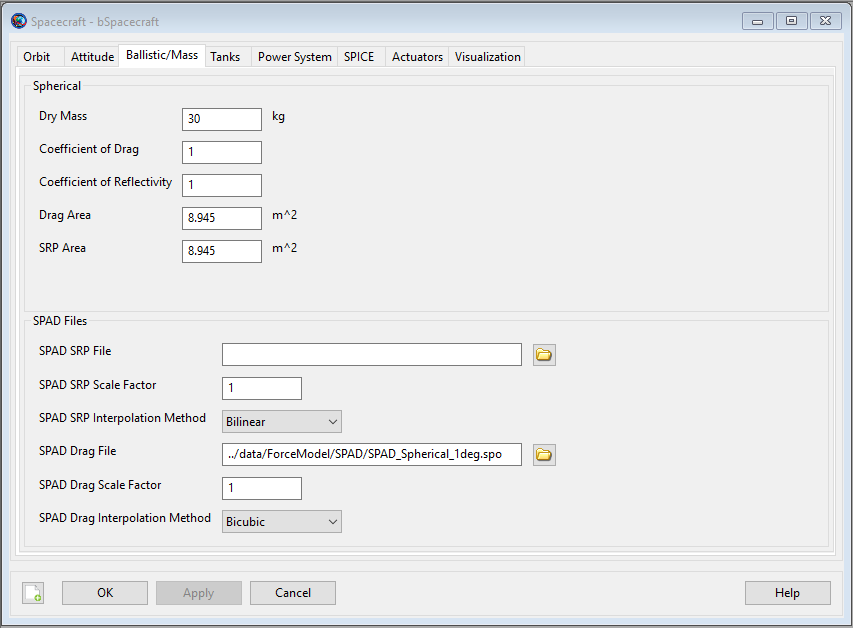

Spacecraft Ballistic/Mass Properties
Spacecraft Ballistic/Mass Properties — The physical properties of the spacecraft
Description
The Spacecraft ballistic and mass properties include the drag and SRP areas and coefficients as well as the spacecraft dry mass. These quantities are used primarily in orbital dynamics modelling. GMAT supports a spherical SRP model, and higher fidelity SRP file option.
See Also: Propagate, Propagator,Spacecraft
Fields
| Field | Description | ||||||||||||
|---|---|---|---|---|---|---|---|---|---|---|---|---|---|
| Cd | The coefficent of drag used to compute the acceleration due to drag.
| ||||||||||||
| Cr | The coefficent of reflectivity used to compute the acceleration due to SRP. A value of zero means the spacecraft is translucent to incoming radiation. A value of 1.0 indicates all radiaion is absorbed and all the force is transmitted to the spacecraft. A value of 2.0 indicates all radiation is reflected and twice the force is transmitted to the spacecraft.
| ||||||||||||
| Drag Area | The area used to compute acceleration due to atmospheric drag.
| ||||||||||||
| DryMass | The dry mass of the Spacecraft (does not include fuel mass).
| ||||||||||||
| SPADSRPFile | Name ( and optionally path information) of SPAD file.
| ||||||||||||
| SPADSRPScaleFactor | Scale factor applied to SRP force when using a SPADModel in the propagation.
| ||||||||||||
| SRPArea | The area used to compute acceleration due to solar radiation pressure.
|
GUI
|  |
The GUI interface for ballistic and mass properties is contained on the Ballistic/Mass tab of the Spacecraft resource. You can enter physical properties such as the drag and SRP areas and coefficients and the Spacecraft dry mass which are used in orbital dynamics modelling. GMAT supports a spherical SRP model and a SPAD (Solar Pressure and Aerodynamic Drag) file.
Remarks
Configuring Ballistic and Mass Properties for the Spherical Model
GMAT supports a cannonball model for drag and SRP modeling. In the cannonball model, the area is assumed to be independent of the spacecraft’s orientation with respect to the local velocity vector and the sun vector. For more details on the computation and configuration of drag and SRP models see the Force Model documentation.
Configuring Ballistic and Mass Properties for the SRP File
The (SPAD) SRP file can be used for high fidelity SRP modelling taking into account the physical properties of the spacecraft (shape and reflectivity) and the spacecraft attitude. SPAD stands for Solar Pressure and Aerodynamic Drag. SPAD files are tabulated data that contain the spacecraft area scaled by physical properties like Cr including specular, diffuse, and reflective properties. Data is expressed as a function of azimuth and elevation in the spacecraft body frame. Note: the azimuth and elevation tabulated on the file are the azimuth and elevation of the vector from the Sun, to the Spacecraft, expressed in the body frame. To compute the SRP acceleration, GMAT computes the sun vector’s azimuth and elevation in the spacecraft body frame, and then interpolates the SPAD data using bi-linear interpolation. Note that this formulation results in an attitude dependent SRP acceleration. For more details on the computation and configuration of drag and SRP models see the Force Model documentation.
Caution
When using a SPAD SRP file, GMAT uses the attitude defined on the Spacecraft resource to compute the Sun's positon in the body frame. If the attitude uses a coordinate system with Axes set to ObjectReferenced, and those axes refer back to the Spacecraft orbit state (i.e. VNB or LVLH systems), GMAT holds the attitude constant over a given integration step. In those cases, we recommend carefully choosing a maximum step size small enough to ensure the resulting approximation is acceptable for your application.
A valid SPAD file header, and the first three lines of data are shown below for illustrative purposes. Note, GMAT does not use all values provide on the file and GMAT's usage of SPAD files is described in detail in the table below the example.
Version : 4.21
System : sphericalSat
Analysis Type : Area
Pixel Size : 5
Spacecraft Size : 436.2
Pressure : 1
Center of Mass : (50.9, 184.9, -49)
Current time : May 7, 2009 15:53:38.00
Motion : 1
Name : Azimuth
Method : Step
Minimum : -180
Maximum : 180
Step : 5
Motion : 2
Name : Elevation
Method : Step
Minimum : -90
Maximum : 90
Step : 5
: END
Record count : 2701
AzimuthElevatio Force(X) Force(Y) Force(Z)
degrees degrees m^2 m^2 m^2
------- ------- --------- --------- --------- ---------
-180.00 -90.00 -0.00000000000000 -0.00000000000000 -8.94500000000000
-180.00 -85.00 -0.77960811887780 -0.00000000000000 -8.91096157443066
-180.00 -80.00 -1.55328294923069 -0.00000000000000 -8.80910535069420 A SPAD file contains three sections as illustrated below. Data specifications for items in each section are described in the tables below
 |
A SPAD file header may contain many fields but only a few are used by GMAT as described below. Other fields are ignored.
| Keyword | Required | Description and Supported Values |
|---|---|---|
| Analysis Type | Y | The SPAD software can creates files with Analysis Types of Solar Pressure, Area, and Drag. GMAT only supports the Area option. Example: Analysis Type : Area |
| Pressure | N | SPAD supports the ability to apply a pressure scale factor for SRP files. GMAT does not read this value, but the SRP properties on the file have been scaled by the Pressure factor. The value is usually “1”. However, when not 1, it is possible to apply an SRP scale factor twice, once from the value applied in SPAD, and once from SPADSRPScaleFactor. Care should be taken to ensure that if the desired scale factor was applied during file creation that it is not reapplied in GMAT. |
The SPAD file Motion Data section describes the data contained in the body of the file. The Motion Data fields used by GMAT are described below. Others are ingored.
| Keyword | Required | Description and Supported Values |
|---|---|---|
| Motion | Y | Together, the Motion and Name fields specify the type of data in the first two columns of the body of the file. GMAT currently supports Azimuth and Elevation Motion only (no articulating appendages) and requires that the first Motion is Azimuth and the second Motion is Elevation as shown below. Examples: Motion : 1 Name : Azimuth and Motion : 2 Name : Elevation |
| Name | Y | Together, the Motion and Name fields specify the type of data in the first two columns of the body of the file. GMAT currently supports Azimuth and Elevation Motion only (no articulating appendages) and requires that the first Motion is Azimuth and the second Motion is Elevation as shown below. Examples: Motion : 1 Name : Azimuth and Motion : 2 Name : Elevation |
| Method | Y | The step size in the independent variable. The only supported value is Step. Example: Motion : 1 Method : Step |
| Maximum | Y | The maximum value for an independent variable (Motion Type). For Azimuth, Maximum must be 180, and for Elevation Maximum must be 90. Example: Motion : 1 Name : Azimuth Maximum : 180 Motion : 2 Name : Elevation Maximum : 90 |
| Minimum | Y | The minimum value for an independent variable. (Motion Type). For Azimuth, minimum must be -180, and for Elevation minimum must be -90. Example: Motion : 1 Name : Azimuth Minimum : -180 Motion : 2 Name : Elevation Minimum : -90 |
| Step | Y | The step size for the independent variable (Motion Type). If Step does not divide evenly into the variable range, then errors may occur because the maximum and/or minimum values may not be on the file. Example: Motion : 1 Step : 15 |
| Record count | Y | Record count is the number of rows of data in the data segment. Record count = (360/(Azimuth Step) +1)*(180/(Elevation Step) +1). Example: Record count : 325 |
The SPAD file data block contains tabulated acceleration data as described below.
| Keyword | Required | Description and Supported Values |
|---|---|---|
| Azimuth | Y | Azimuth data column. Must be first column in the data. Units must be degrees. Azimuth is the azimuth of the vector from spacecraft to sun, expressed in the body frame: atan2(ySun,xSun)). Example: AzimuthElevatio degrees degrees ------- ------- -180.00 -90.00 -180.00 -75.00 -180.00 -60.00 |
| Elevation | N | Elevation data column. Must be second column in the data. Units must be degrees. Elevation is the elevation of the vector from spacecraft to sun, expressed in the body frame: atan2(zSun,sqrt(xSun^2 + ySun^2)). Example: AzimuthElevatio degrees degrees ------- ------- -180.00 -90.00 -180.00 -75.00 -180.00 -60.00 |
| Force(*) | N | Area vector columns. Must be columns 3-5 in the data. Quantities must be in base units of m^2,mm^2,cm^2,in^2,ft^2. If another unit is provided in the header lines, an exception is thrown. The area vector is the direction of the resulting SRP force, scaled by area and Cr properties. Example: See code listing above. |
Total Mass Computation
The TotalMass property of a Spacecraft is a read-only property that is the sum of the DryMass value and the sum of the fuel mass in all attached fuel tanks. GMAT’s propagators will not allow the total mass of a spacecraft to be negative. However, GMAT will allow the mass of a ChemicalTank to be negative. See the ChemicalTank documentation for details.
Examples
Configure physical properties for a spherical SRP model.
Create Spacecraft aSpacecraft
aSpacecraft.Cd = 2.2
aSpacecraft.Cr = 1.8
aSpacecraft.DragArea = 40
aSpacecraft.SRPArea = 35
aSpacecraft.DryMass = 2000
Create Propagator aPropagator
BeginMissionSequence
Propagate aPropagator(aSpacecraft, {aSpacecraft.ElapsedSecs = 600})Configure a SPAD SRP model.
Create Spacecraft aSpacecraft;
aSpacecraft.DryMass = 2000
aSpacecraft.SPADSRPFile = '..\data\vehicle\spad\SphericalModel.spo'
aSpacecraft.SPADSRPScaleFactor = 1;
Create ForceModel aFM;
aFM.SRP = On;
aFM.SRP.SRPModel = SPADFile
Create Propagator aProp;
aProp.FM = aFM;
BeginMissionSequence
Propagate aProp(aSpacecraft) {aSpacecraft.ElapsedDays = 0.2}